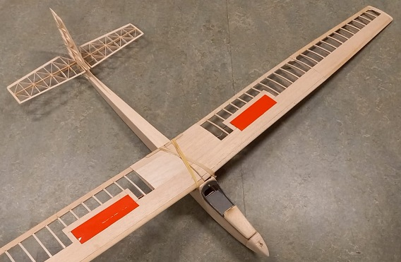
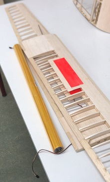
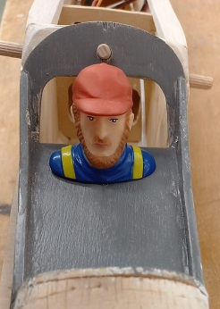
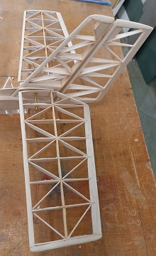
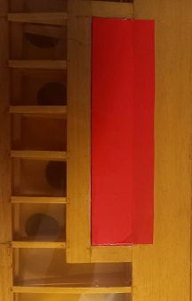
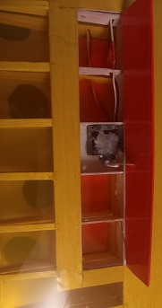
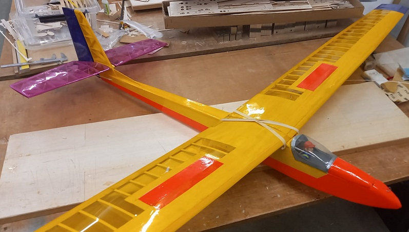

Dick van der Kolk is al vele jaren actief bij de Arnhemse Luchtvaart Club (ALC). Zelf bouwen van je modellen is voor velen een belangrijk aspect van het lid zijn van de ALC. Een van de weinige modelvliegclubs in Nederland waarbij leden gezamelijk de vliegtuigmodellen op de club bouwen. Na het bouwen komt natuurlijk het afstellen, inregelen en fine tunen van de gebouwde ‘kist’. Dan komt vanzelfsprekend het vliegen met het model.
Een modelvliegtuig kan als bouwpakket gekocht worden maar vaak wordt het model gebouwd vanaf tekening. Uit de ALC houtvoorraad kan hout gebruikt worden voor het bouwen op deze manier. Dick heeft een HiFly model gebouwd vanaf tekening, dus geen bouwpakket.
Zo ook bij dit gebouwd toestel, is het bouwen en vliegen een geslaagd feit.
Dick heeft tijdens de bouw een aantal foto’s gemaakt om te delen.

Dit wordt dan de Hi Fly , in ruwbouw, een echt Retro-modelvliegtuig. Elk onderdeel is met de hand gemaakt.
Model eigenschappen:
- Ontwerp dateert uit 1973
- Spanwijdte: 2.30 m
- Lengte: 1.030 m
- Gewicht: 800 gram
- Vleugeloppervlak: 40 dm2
- Vleugelprofiel: NACA 4409
- Ontvanger: Graupner GR-24
- Servo,s 2(antieke) MS-1 servo,s (hoogteroer,richtingroer
- 2 merkloze servo,s voor de kleppen

De vleugels in ruwbouw, er zitten ook kleppen ingebouwd. Op de voorgrond ligt een transparant geel folie, daar worden de vleugels en de romp en het kielvlak mee bekleed.

De Hi Fly wordt van piloot voorzien. Dit geeft het model een persoonlijk tintje.

De staart is nu voltooid, alles is goed te zien

De voltooide vleugel met rode klep

Geopende klep geopend, deze wordt op dezelfde manier aangestuurd als bij een RES zwever, met behulp van een verenstaaldraadje en een verlengd servohoorntje.

De Hi Fly gereed, voorzien van contrastrijke folie, besturing ingebouwd en afgesteld en uitgebalanceerd. De eerste vlucht (maiden) kan beginnen.